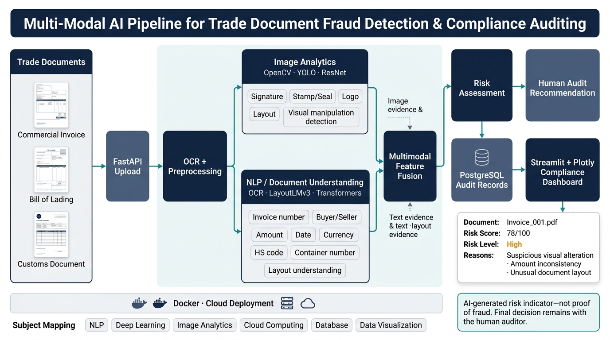

University Engineering Presentation · 16:9 Systems Architecture Reference

This systems diagram illustrates the complete ingestion and analytical path of cross-border trade documentation:
Reasons:
• Suspicious visual alteration
• Amount inconsistency
• Unusual document layout